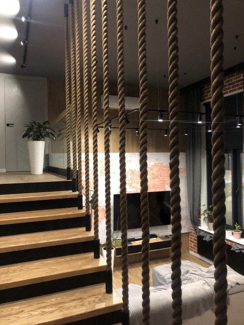

Продукты
НЕСТАНДАРТНЫЕ СЕТКИ ДЛЯ ДЕТСКИХ КРОВАТОК И МЕБЕЛИ
Делаю любые заградительные и декоративные сетки для детских кроватей, детских спортивных уголков и детской мебели. Сетки делаю из любого доступного на рынке каната с ячейками абсолютно любого размера, который вам нравится (хоть 138х138 или 124,5х124,5) или подберу тот размер, который гармонично подходит под ваш проект.
Длительное время тесно сотрудничаю с главными экспертами страны по детской безопасности.
Также изготавливаю сетки для лабиринтов, сетки туннели и заградительные сетки для лестниц. Помогу подобрать все отступы по краям чтобы смотрелось красиво.
Готовые сетки можем смонтировать или отправим вам с курьером по москве/ТК в любой регион. При отправке бесплатно дистанционно проконсультирем по монтажу.
Мы используем высококачественные экологичные отборные канаты от проверенных временем поставщиков. Можем изготовить из вашего каната.
Каждую сетку делаем аккуратно, качественно, ответственно как если бы делали для себя.
ПОЛ-ГАМАК (СЕТКА ДЛЯ ЛЕЖАНИЯ, LOFT СЕТКА ИЛИ СЕТКА ДЛЯ ОТДЫХА) ПОД КЛЮЧ
Проектирование, производство и монтаж под ключ: сетка для лежания, также известная как: пол-гамак, потолок-гамак, сетка-пол, сетка-потолок, иногда лофт сетка или loft net, некоторые называют вторым светом А-фрейм или A-frame (дом-шалаш) с УСТАНОВКОЙ или же с моей детальной консультацией и информационной поддержкой в случае самостоятельного монтажа. Отправляю во все регионы.
За 4,5 года не было ни одного случая когда кто-то из региона получив комплект не смог самостятельно по моей инструкции установить пол-гамак.
Пол гамак изготавливается индивидуально под ваши размеры и форму вашего проема. Мы предлагаем различные виды сеток для лежания в зависимости от предполагаемого места установки (дом/улица), предполагаемой нагрузки и формы проема.
В случае необходимости спроектирую правильное надежное крепление для реализации вашей идеи или предложу собственные варианты.
Пятилетний опыт работы в этой сфере и самостоятельное погружение в каждый проект позволило мне познать все тонкости и хитрости правильного подбора материала, проведения расчетов и качественной установки полотна пола-гамака которыми я обязательно делюсь со своими клиентами, что в свою очередь ограждает их от допущения частых ошибок и как следствие защищает от вытекающих из этого дополнительных расходов.
Кроме этого у меня есть собственные разработки и know-how успешно применяемые в моих проектах.
Стремясь прежде всего к тому, чтобы каждый клиент остался доволен конечным результатом, а не просто продавая вам сетки, я всегда прошу своих клиентов по возможности делиться фотографиями установленных сеток или же предлагаю им провести бесплатную качественную фотосъемку.
Для установки пола-гамака на улице имеется специальная сетка устойчивая к солнечному свету.
Остерегайтесь мошенников которые абсолютно ничего не знают о продукте, а только впаривают вам кусок отрезанной от рулона совершенно не предназначенной для пола-гамака сетки под видом специального полотна. Это очень легко проверяется. Попросите их лично установить ее сетку, первым испытать её и представить какую-то гарантию. Подвсевозможными предлогами мошенники откажутся это сделать.
СЕТКИ ДЛЯ ЛАЗАНИЯ НЕСТАНДАРТНЫХ ФОРМ И РАЗМЕРОВ
Мы изготавливаем экологичные изделия ручной работы из натуральных канатов на заказ именно под ваши размеры. Это могут быть сетки для лазания, пиратские сетки, сетки для детских спортивных уголков и игровых площадок, сетки и лестницы, сетки для домиков на деревьях, сетки для декораций, сетки для театров и киностудий, лазалки, рукоходы или же что-то другое.
Летом 2023 года по заказу ГосКино нами была изготовлена сетка для съемок нового фильма «Бременские музыканты». Вес сетки составлял 198 кг, а на ее производство ушло 905 метров джутового каната диаметром 19 мм. Срок изготовления составил 2 недели. Сетка должна была выдержать вес 6 основных героев фильма с чем она успешно справилась и навсегда вошла в историю.
Мы не придерживаемся стандартов, у нас все делается индивидуально под конкретного клиента. Мы делаем ячейки абсолютно любого размера, например 137х137, или 142х158. Мы с удовольствием подберём для вас размеры и отступы соответствующие именно вашему проекту, да ещё и в нескольких вариантах.
ЛЮБЫЕ ПЕРЕГОРОДКИ ИЗ КАНАТОВ И ВЕРЕВОК С МОНТАЖОМ
Мы с радостью изготовим под ваши размеры декоративные экологичные перегородки (разделители пространства, светопроницаемые стены) в форме:
- - параллельных канатов
- - пересекающихся канатов
- - различных сеток
- - по индивидуальному рисунку
У нас нет ограничений по материалам. Можем изготовить изделие из джута, ХБ, сизаля, манильского каната, льна, полиамида, полипропилена, полиэфира, кевлара как из плетеных так и из крученых.
Диапазон диаметров от 6 мм до 56 мм.
Собственная отработанная технология производства и система постоянного натяжения канатов.
Полностью ручная работа. Если нет в списке того, что вам необходимо позвоните, обсудим и сделаю то, что вам требуется.
Цена договорная, расчет стоимости производится индивидуально по каждому заказу.
Проектирование крепления (в том числе нестандартного) и последующий монтаж. Обсуждается индивидуально.
Как и другие наши изделия мы отправляем перегородки в любой регион и дистанционно консультируем по их установке.
ПРОЧИЕ ИЗДЕЛИИЯ ИЗ КАНАТОВ И ВЕРЁВОК
Мы любим нестадартные проекты и с удовольствием в них участвуем помогая вам реализовать свои смелые идеи.
Летом 2023 у нас был срочный заказ из Кронштадта в рамках которого мы в сжатые сроки произвели корабелные ванты в натуральную величину.
А годом ранее я получил заказ на эксклюзивное безузловое полотно гамака из ХБ каната диаметром 13 мм с ячейкой 80х80 мм который необходимо было окрасить в чёрный цвет. Как показала практика – ХБ такого диаметра окрасить в черный цвет без специального производственного оборудования невозможно как мы ни старались. Поэтому, данный гамак стал частью интерьера мастерской. В нем можно посидеть, полежать, покачаться и даже вздремнуть если вдруг потянет в сон )